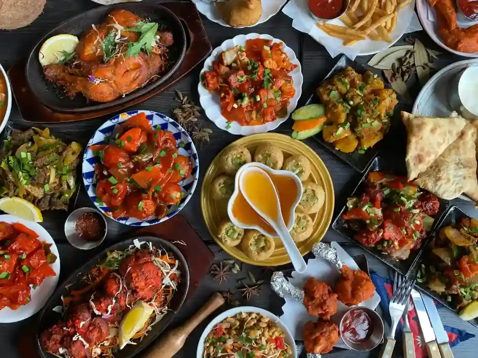
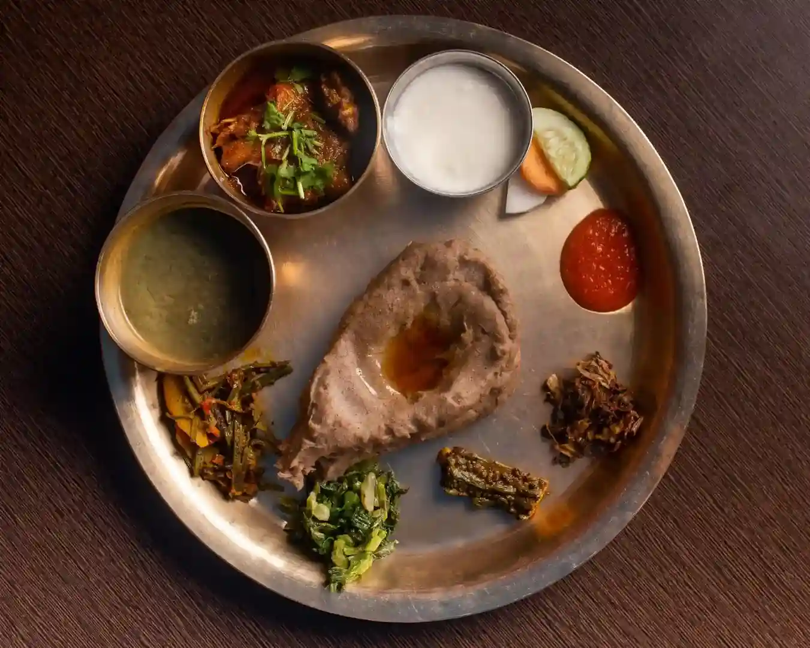
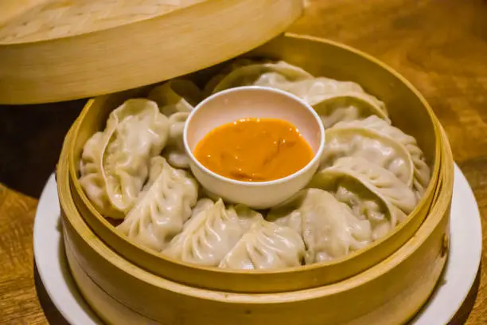
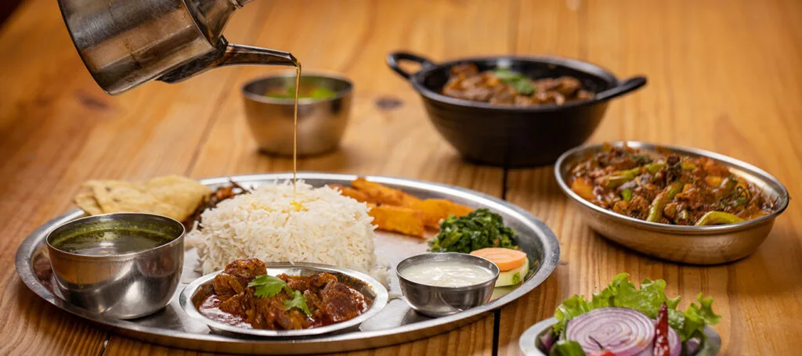

AUTHENTIC NEPALI CUISINE
The Taste of Nepal, Delivered with Love.
Experience the authentic flavours of Nepal. From traditional Dal Bhat to delicious Momos, we bring homemade Nepali food straight to your door.
Explore Our Menu
WELCOME TO NAMASTE NEPAL
A Taste of Home
Namaste Nepal is a traditional Nepali food restaurant dedicated to sharing the rich flavours and food culture of Nepal. We prepare delicious meals inspired by traditional Nepali recipes, using fresh ingredients and love. Whether you visit us or order from home, we want every meal to feel like home.
OUR FAVOURITES
Popular Nepali Dishes

Dhido Set
A traditional Nepali dish served with gundruk soup, seasonal vegetables and homemade achar.

Chicken Momo
Delicious steamed dumplings served with spicy achar.

Thakali Khana
A traditional Himalayan meal full of flavour.
FRESH FOOD, AT YOUR DOOR
Enjoy Nepali Food Anywhere
Stay home and enjoy your favourite Nepali dishes. Our food delivery service makes enjoying traditional meals easy and convenient.
Contact Us